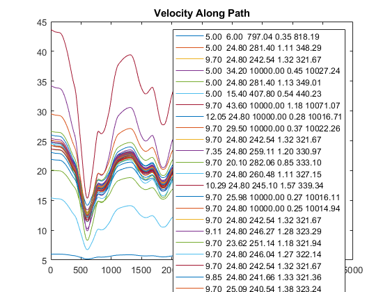
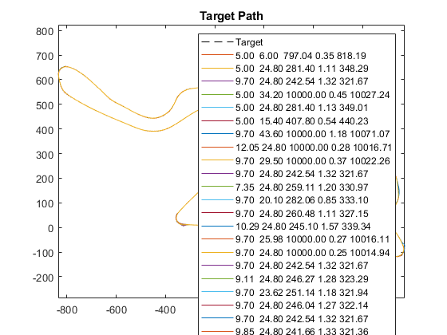
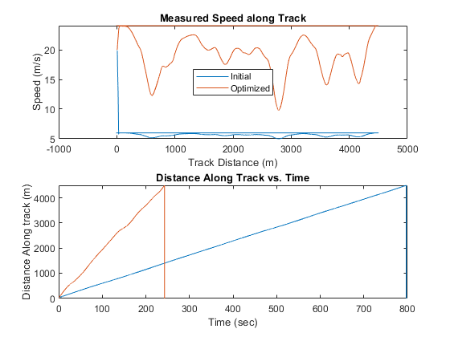
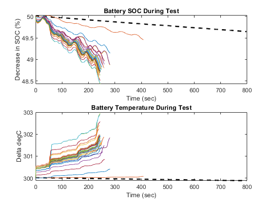
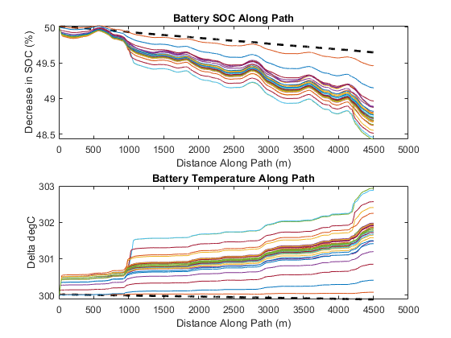
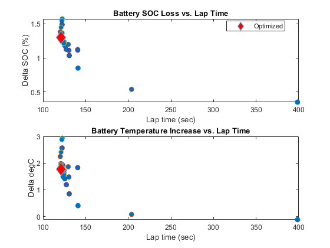

Minimize Lap Time Considering Regeneration Using Optimization, Kyalami (No Elevation Change)
This example shows how to minimize lap times using optimization algorithms using the Kyalami Grand Prix Circuit. This optimization assumes no elevation to shorten the optimization process. The cost function considers the loss in battery state of charge to factor in vehicle range to the optimization.
Results of Optimization
Warning: ['sm_car/Vehicle/Vehicle/Powertrain/Power/Electric A1
A2/Battery/Battery'] Parameter stateOfCharge references non-value variable
Power. This parameter will not be treated as a Simscape runtime parameter.
Iter Func-count f(x) MeshSize Method
0 1 821.526 4.7
1 1 821.526 1.175 Refine Mesh
2 2 348.97 2.35 Successful Poll
3 2 348.97 0.5875 Refine Mesh
4 6 321.211 1.175 Successful Poll
5 7 321.211 0.2938 Refine Mesh
6 13 321.211 0.07344 Refine Mesh
7 21 319.882 0.1469 Successful Poll
8 27 319.882 0.03672 Refine Mesh
9 35 319.674 0.07344 Successful Poll
10 43 319.674 0.01836 Refine Mesh
11 51 319.356 0.03672 Successful Poll
12 59 319.356 0.00918 Refine Mesh
Optimization terminated: mesh size less than options.MeshTolerance.
Elapsed time for optimization = 4354.2597
     